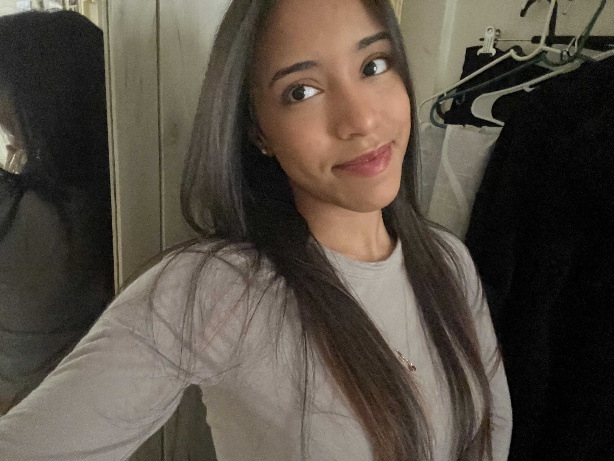

Hello! I’m in my second year at Hunter College and I’m pursuing media studies with a concentration in media analysis and criticism. I have always been passionate about film and the media that we consume today. I feel that it’s important to express our thoughts and opinions creatively, especially through different media forms. I believe that especially in the times we live in currently, it’s really important to learn about media literacy and its significance on the younger generations of today’s world.
With my degree in media studies, I hope to get into the marketing or public relations field to use my knowledge on media and incorporate it on individuals or several brands that have a big influence on the world today. With most social media apps looking the same nowadays, branding and unique creation is essential on standing out to people who are so used to the same layouts. Getting familiar with different forms of media is essential in making a lasting impact especially at a time where things are changing rapidly.
